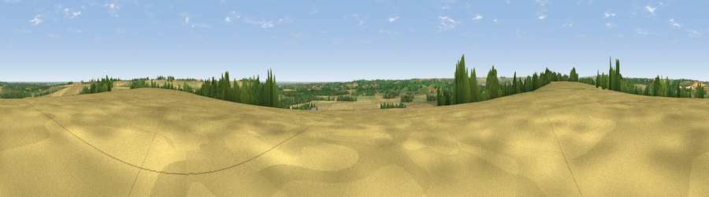

Viewpoint near Brinkhill
#18569 in England · top 11% of its area beats it · near BrinkhillThe view, rendered

A 360° render of this exact spot computed from the terrain model, tree cover and land cover — summer colours, afternoon light, calibrated against photographs of famous viewpoints. Real trees, hedges and buildings will differ in detail.
The panorama
Grey silhouette: terrain skyline in each direction (720 bearings, Earth curvature and refraction included). Dashed green: skyline with trees (+15 m) and buildings (+8 m) as obstacles. Blue strip: how far the ground is visible on each bearing.
Where the view opens
Wedge length = distance to the farthest visible ground on that bearing (vegetation-aware). Rings at 10, 25 and 50 km.
What fills the view
60% cropland · 30% grassland · 9% woodland ·
Angular shares of the visible panorama (visual magnitude), not map area. Landscape diversity 0.41 (0–1 Shannon).
Key numbers
More beautiful places nearby
The staircase of upgrades: each row has a higher view potential than everything closer. Driving times are estimates from straight-line distance, calibrated against real road routing — check an actual route before setting out.
| Place | Direction | Drive | Score |
|---|---|---|---|
| Warden Hill | WNW · 3 km | ~8 min | 59.5 |
| Viewpoint near East Keal | S · 8 km | ~17 min | 66.0 |
| Viewpoint near Claxby | NW · 35 km | ~53 min | 71.5 |
| Garrowby Hill (A166 crest) | NNW · 102 km | ~126 min | 71.9 |
| Viewpoint near Bempton | N · 103 km | ~128 min | 72.8 |
| Broombriggs Hill | WSW · 104 km | ~129 min | 74.4 |
| Viewpoint near Woodhouse Eaves | WSW · 104 km | ~129 min | 77.7 |
| Viewpoint near Speeton | N · 105 km | ~129 min | 80.0 |
53.23231, 0.06491 · source: screening · position refined by local search. Computed location — check access rights before visiting.